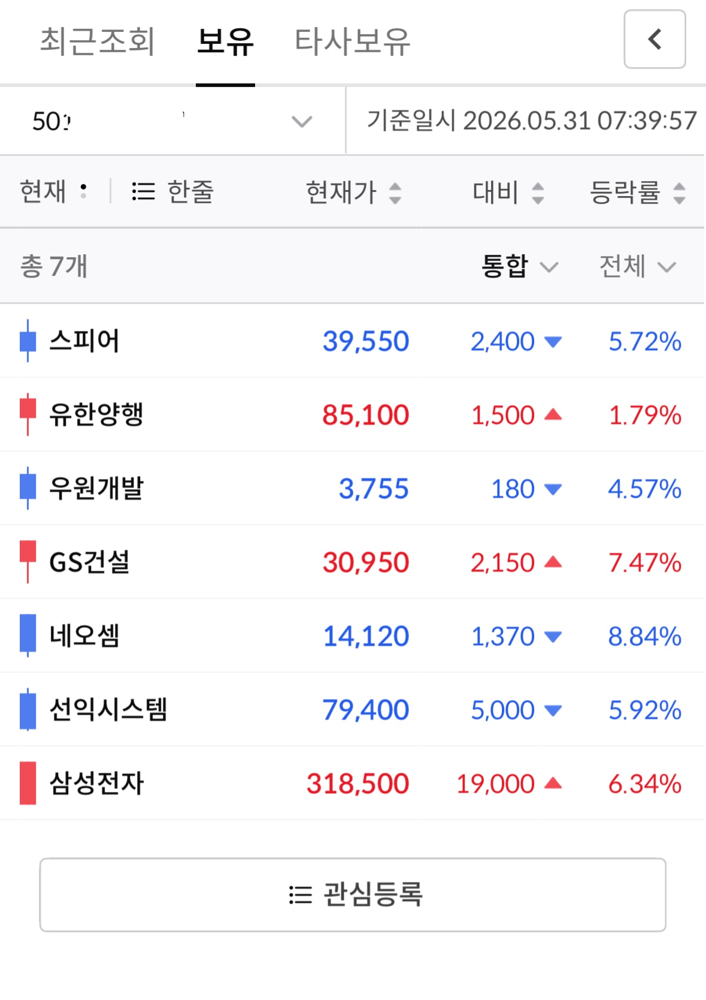
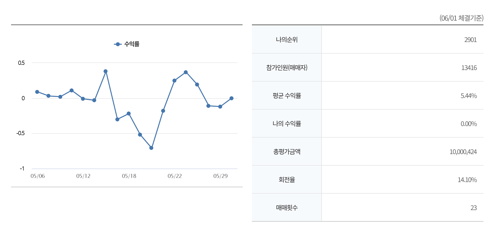

코딩으로 주식
코드를 실행하면 실제로 주식 자동 매수 가능

① 봇 실행

② 한국투자증권 앱에서 자동 체결
- 사람이 차트를 볼 필요 없이 봇이 24시간 공시를 감시
- 호재 공시가 뜨는 순간 자동으로 매수
- 목표 수익률 도달 시 자동 익절, 손실 한도 초과 시 자동 손절
project
공시가 뜨는 순간 자동 매수 → 목표 수익률 도달 시 자동 익절 · 손절까지
기업의 공시를 읽고 자동으로 투자해주는 트레이딩봇!
사람은 욕심에 늦게 팔고, 공포에 일찍 팝니다.
트레이딩 봇은 감정 없이 설정한 조건대로만 움직입니다.
작동 원리
코드를 실행하면 실제로 주식 자동 매수 가능
① 봇 실행

② 한국투자증권 앱에서 자동 체결
기간 5월 6일 ~ 5월 29일 (06/01 체결기준)

DART API로 60초마다 새 공시를 감지하고 키워드로 매수 여부를 판단해요
돌리면서 생긴 버그들